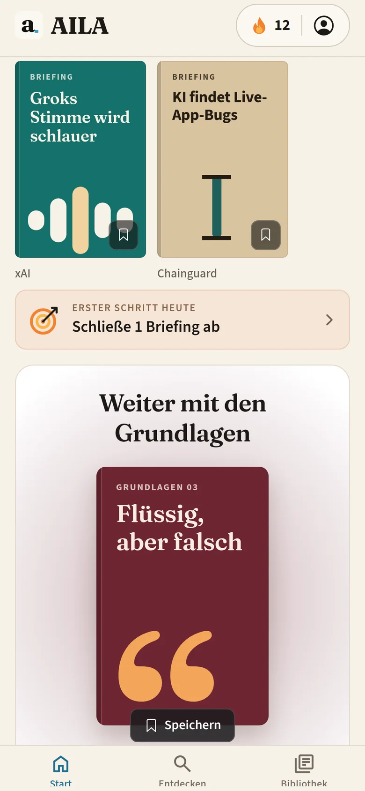
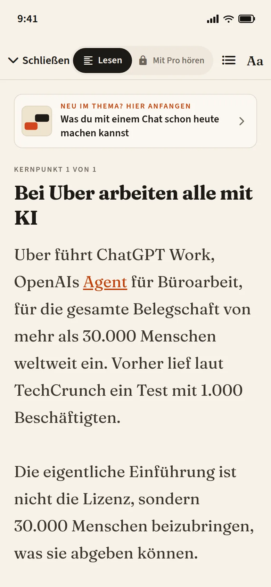
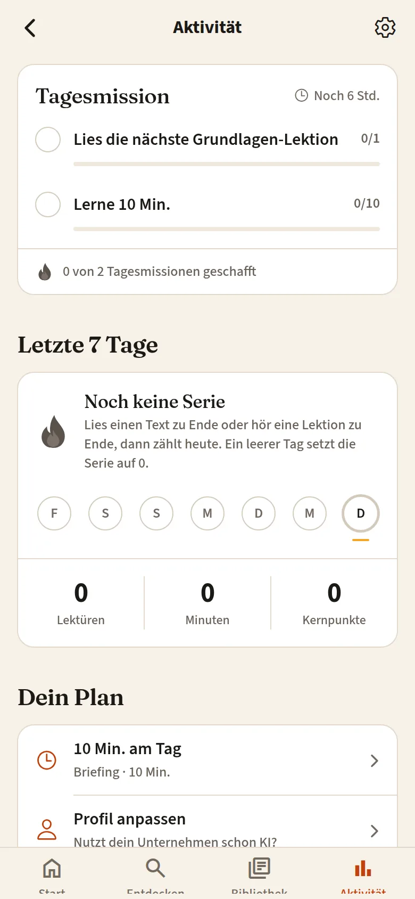
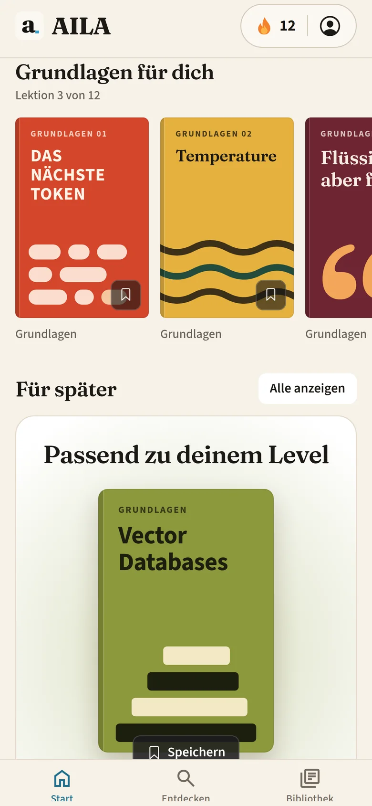
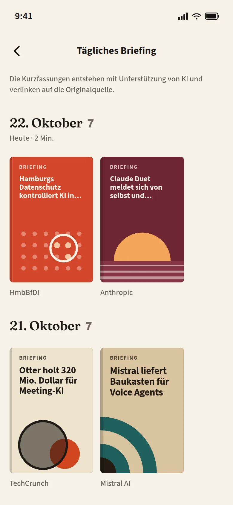

Hi, ich bin Aila
Früher Sprachen mit Duolingo, heute KI mit AILA.
KI lernen, wie früher eine Sprache: kurz, täglich, von null.
Demnächst im App Store Demnächst bei Google Play
Das tägliche Briefing bleibt frei. Premium öffnet die längeren Lektionen und Audio. Eine Testphase von 7 Tagen erscheint nur, wenn der Store sie anbietet. Den Preis zeigen App Store oder Google Play.
In der App
Auf dem Handy.





(01)Der Pfad
Drei Level. Du fängst beim ersten an.
Ein geführter Pfad von null, ohne Fachjargon. Artikel, wenn du den Mechanismus willst. Ein Briefing am Tag, 5, 10 oder 15 Minuten, passend zu deinem Level, und eine Erinnerung auf dem Gerät. Wer die Übung behält, bleibt auf der Seite, die gewinnt. Wer sie auslässt, merkt es im Raum zu spät.
Hier fängst du an
Ein Bild des Pfads, keine Punktzahl.
-
01
Basics
Was KI ist, was ein Prompt ist, und was die Tools auf deinem Handy schon können. Für den kompletten Anfang. Ohne Fachjargon.
-
02
Core
Die Bauteile, mit ihren Namen: Model, Token, Context Window. Jedes in normaler Sprache, bevor es wieder vorkommt.
-
03
Depth
Längere Artikel. Agents, Benchmarks, Fine-tuning, und wie du eine Behauptung in einer KI-Meldung prüfst.
(02)Einmal am Tag
Daily AI Briefing
Kuratierte KI-Nachrichten. Aus dem Labor und aus Alltags-Tools. In der App passt das Briefing zu deinem Level.
-
Gemini 4 Argon ist live für Entwickler und Abonnenten
Google hat Gemini 4 Argon weltweit freigeschaltet: API, Antigravity, Gemini-App und AI Mode in Search für Pro und Ultra. Es zielt auf schwere Mehrschritt-Arbeit, mit 1M Token-Limit und Einführungspreis von 2/10 Dollar pro Million Tokens.
-
Liquid AI liefert 24B-Modell für Agents auf dem Gerät
LFM2.5-24B-A2B ist Open-Weight mit 24B Parametern, aber nur 2B aktiv pro Token, 131K Context Window und Support für llama cpp, MLX und vLLM. Laut Liquid hält es bei mehreren Agent- und Tool-Benchmarks mit größeren MoEs mit.
-
Claude baut Live-Dashboards und animierte Erklärer
Anthropic startet Claude Dashboards und Claude Motion in der Beta: Live-Dashboards aus Firmendaten und editierbarer Animations-Code als MP4. Docs, Slides und Design sind aus der Beta und auf jedem Plan inklusive Free.
(03)Warum jetzt
Nicht zurückbleiben.
Mit AILA bist du auf der Seite, die gewinnt.
Zurückbleiben
- Im Meeting fällt ein Wort, das du noch nicht kennst.
- Eine Meldung über ein Modell bleibt nur eine Meldung.
- Das Tool auf dem Handy bleibt eine Blackbox.
Mit AILA
- Basics benennt die Sache beim ersten Mal.
- Das Briefing passt zu deinem Level, einmal am Tag.
- Du kannst sagen, was eine Behauptung nicht belegt.
Vorher
Das Context Window sättigt, die Aufmerksamkeit verteilt sich auf die Tokens.
Nach Basics
Das Modell kann nur so viel auf einmal lesen. Sag die Aufgabe, und sag, was du nicht willst.
3Level. Du fängst bei Basics an.
1Ein Briefing am Tag.
5–15Minuten, die du wählst.
Für Teams
AILA for Teams
AI Literacy für Beschäftigte. Art. 4 des EU AI Act verlangt von Anbietern und Betreibern von KI-Systemen Maßnahmen, damit ihr Personal über ein ausreichendes Maß an AI Literacy verfügt.
FAQ
Vier Fragen.
Was ist AILA?
AILA ist eine Lern-App: ein geführter Basics-Pfad, vertiefende Artikel und ein Briefing am Tag. Du wählst 5, 10 oder 15 Minuten. Eine Erinnerung bleibt auf dem Gerät. Die App setzt die Uhrzeit aus der Zeit, zu der du AILA gewöhnlich öffnest. Es gibt keine Uhr zum Einstellen und kein Quiz. Das Briefing enthält auch Alltags-Tools und passt zu deinem Level.
Ist AILA kostenlos?
Das tägliche Briefing bleibt frei: die Schlagzeilen und die kurzen Zusammenfassungen. Ebenso die erste Basics-Lektion, die erste Lektion jedes Pfads und drei Karten. AILA Premium öffnet die übrigen Lektionen, die längeren Artikel und Audio. Eine Testphase von 7 Tagen gibt es nur, wenn der Store sie anbietet. Den Preis zeigen App Store oder Google Play. Abo und Testphase schließt du im Store ab, nicht auf dieser Website.
Und Android?
AILA kommt demnächst für das iPhone. Android folgt. Bis ein Eintrag live ist, steht hier: demnächst im App Store und bei Google Play.
Was passiert mit meinen Daten?
Lesefortschritt, Einstellungen und ein optionaler Name bleiben auf deinem Gerät. Die App verlangt keinen Namen, und es gibt kein Quiz. Diese Website setzt keine Cookies und nutzt keine Tracker von Dritten. Die Datenschutzerklärung beschreibt es vollständig.